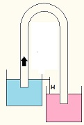
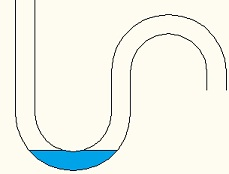

|
 Para
saber más Para
saber más |
Un sifón es un dispositivo hidráulico que se utiliza para trasvasar un líquido de un recipiente a otro. Consiste simplemente en un tubo en forma de U invertida, en la que una de las ramas es más larga que la otra. Queremos trasvasar agua entre dos depósitos (vasos), uno más alto que el otro, hasta que se igualen los niveles de agua. El problema que se nos presenta es que necesitamos que el agua ascienda. |
|  |
Si le damos la vuelta al sifón y llenamos completamente de agua (o de fluido a trasvasar), tapamos los extremos, y los introducimos en cada uno de los recipientes. Comprobamos que el agua fluye de un recipiente a otro, hasta que se igualan las alturas de los depósitos. ¿Qué ha sucedido?
Como sabemos los puntos a la misma altura tienen igual presión hidrostática. Estamos comunicando dos depósitos de distinta presión por lo que circulará del de mayor presión al de menor, hasta que el nivel de los fluidos se iguale.
Este dispositivo se usa en los inodoros de nuestra casa, para evitar que los malos olores de las tuberías de desagüe salgan al exterior. En este caso lleva un doble sifón puesto en horizontal |
|  |
Cuando vaciamos la cisterna, se llena la primera curva del tubo y la segunda actúa como un sifón, vaciando la primera hasta que el nivel de agua baja y entra algo de aire (presión atmosférica). En este momento, el sifón deja de funcionar y retrocede el agua que está en la parte ascendente entre las dos eses, llenando la primera curva del tubo y aislando el desagüe de los gases de la cañería. Si pusiésemos un tubo vertical, los malos olores ascenderían ya que no van a encontrar agua que los frene. |
|
|
|